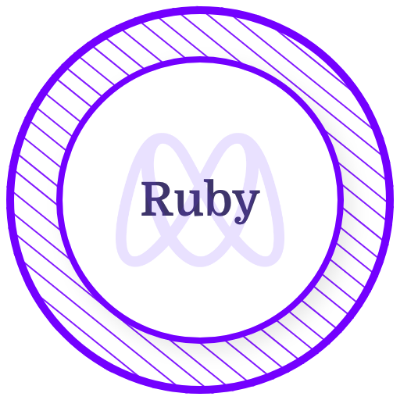
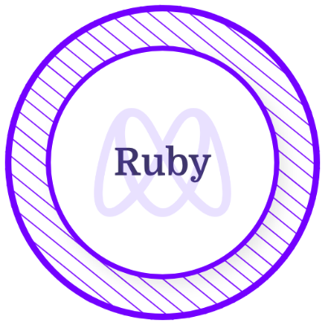
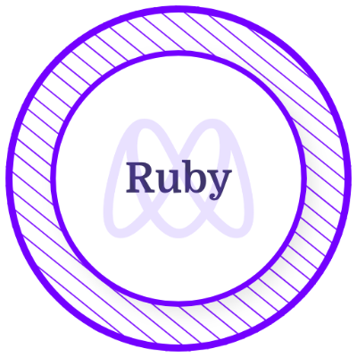

Adan Fernandez Bonilla
Full-stack develover
Check some of the projects that I have built

About Me
Hi, my name is Adan Fernandez, and for the most part, I've been working in the customer service industry for different worldwide companies as well as for companies in the USA, and if I have learned something is how to understand the needs of people. During all of that time that I worked as a customer service agent, there was not a single time that I stopped thinking that I could solve a lot of customer's problems using software or even on my end as the agent sometimes I was like "I can improve this program so that I can be more productive" I knew that could be done because when I was in high school, I had a class where I got to know a bit of how software and computers worked, after high school, I went to university and studied computer science so, that feeling of making things better by using software was only getting stronger every day. So, I finally started focussing 100% on programming, I quit my job, joined Microverse, and that gave me the opportunity to work remotely with people around the world in realtime, building on the knowledge I had, building a lot of different projects using different tools(HTML / CSS3 / Ruby on Rails), solving problems, codding challenges, making sure I get better every time. At this point, I'm sure that I can build amazing apps to solved problems based on ideas, solve business puzzles using code. I love to see business grow with the help of code, I do not want to keep on doing the same task for the rest of my life, I want to create amazing things using code and make people's lifes better with them. Programming is my passion, and from the very first day I started programming till now there hasn't been a doubt. I want to be a software developer for the rest of my life.


Group our Items
This project is a simple app built using basic Ruby on Rails functionalities in this app you can create an account, and when logged in, you can create groups and items to help you organize the items that you need to buy for a specific place or purpose. For example: if you need to buy milk, you can create the group kitchen and say that you need milk by creating the item milk.
Pho-tour(HTML and CSS3 project)
This project is based on a design given by Cindy Shin in Behance the goal was to use the design but add my own content and at the same time I had to use Flexbox, the box model, CSS media queries for responsiveness and CSS3 in general in order to create a web-page.
Ruby basic linter(console app)
This project consists in the development of a basic linter, in this case I choose to validate in a given file if all of the parenthesis, square brackets and curly brackets were properly close in each line.